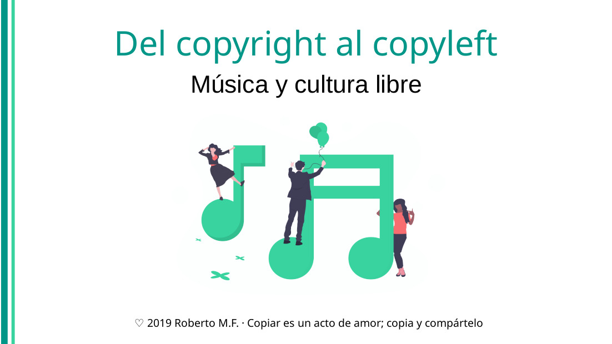

Del copyright al copyleft: música y cultura libre
Explicación histórica desde la legislación de derechos de autor hacia la cultura libre y su aplicación al ámbito musical, incluyendo el software libre musical. Impartida en público en el Ⅰ Ciclo de Conferencias para Estudiantes de Música en el Real Conservatorio Superior de Música de Madrid. Descarga las diapositivas en PDF desde este enlace.
Publiqué las notas de esta charla que di en el RCSMM en tres artículos en este blog:
- Los derechos de autor históricamente y según la legislación española vigente. Puedes leerlo aquí.
- La cultura libre: qué es, cómo practicarla (licencias), qué proyectos musicales existen y cómo financiarla. Puedes leerlo aquí.
- El software libre: la ética hacker, proyectos de software musical libre y la cláusula copyleft. Puedes leerlo aquí.